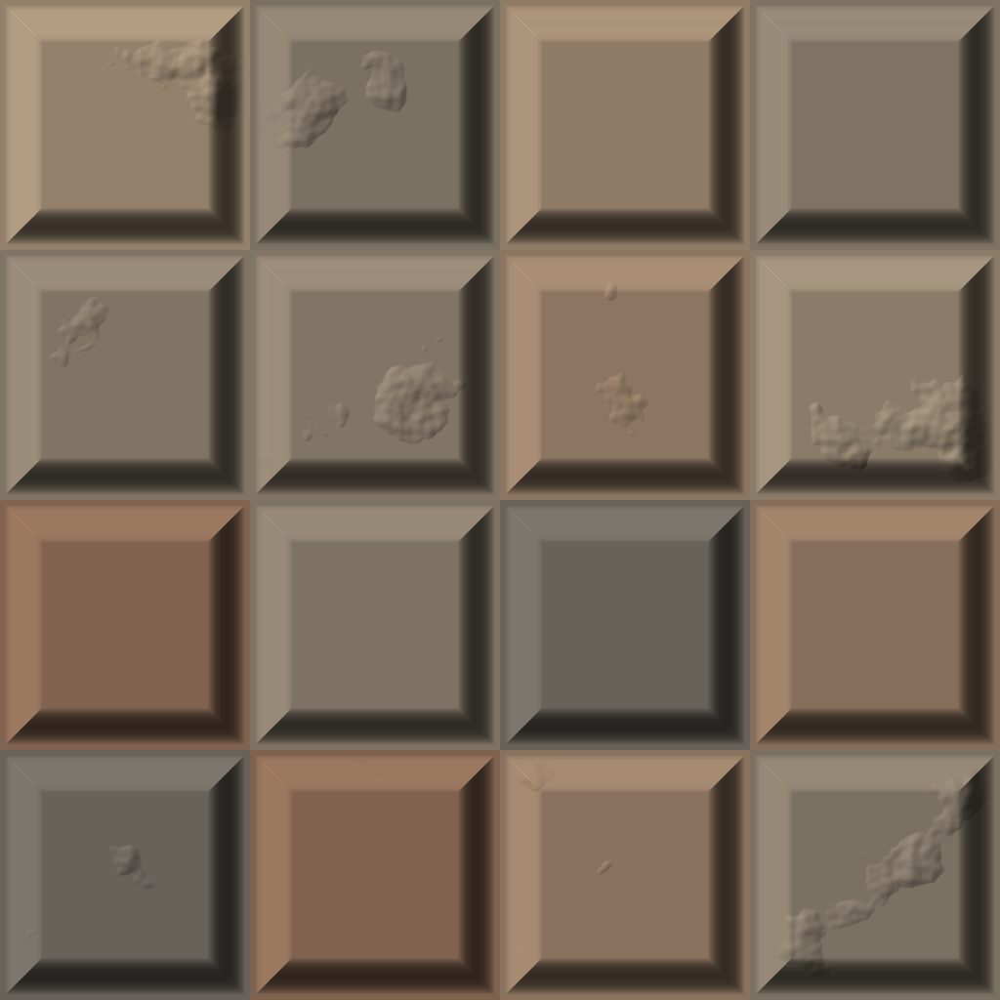
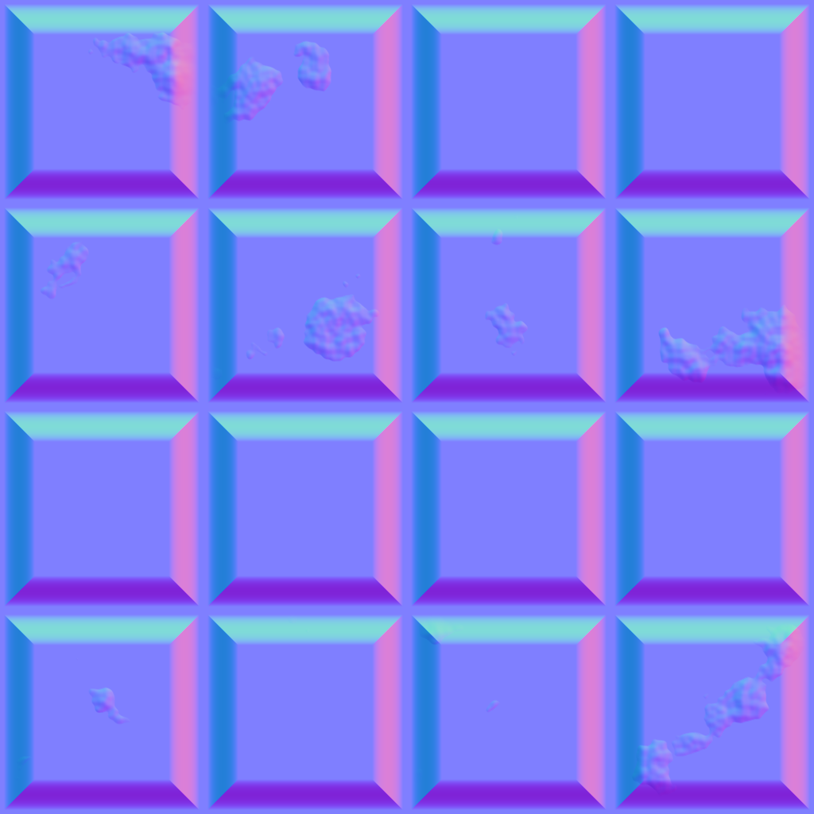
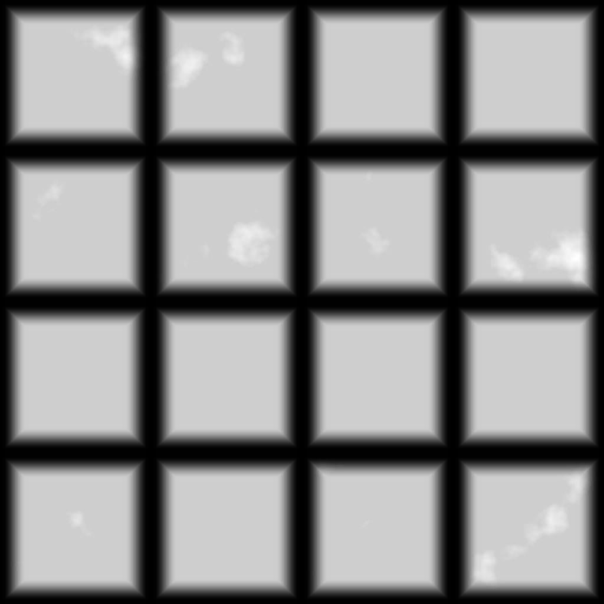

Tutorial 5: COP texture#
Builds a small stone-tile texture with COP (image) nodes: a noise and a tile pattern are combined into a height layer, the tiles get a colour each, a normal map is derived from the height, and the result is lit, previewed and saved. COP nodes pass a COPIMAGE, a stack of named layers, between them; most nodes read one layer and write another.
| Lit result | Normal map (signed export) | Height (normalize export) |
|---|---|---|
 |  |  |
Load it#
Drag example_workflows/tutorial_05_cop_texture.json onto the ComfyUI canvas and press Queue. No model files or other custom nodes are needed. The two Save Image nodes write pcg/tutorial_tiles_normal_*.png and pcg/tutorial_tiles_height_*.png into ComfyUI's output folder.
Step by step#
- COP Noise (PCG) ("Noise (layer C)") creates a 1024 x 1024 image with a 5-octave Perlin noise in the default layer
C. - COP Levels (PCG) ("More contrast") remaps
Cfrom the input range 0.25..0.75 to 0..1 (clamped), which turns the soft noise into distinct patches. - COP Pattern (PCG) ("Tiles 4 x 4") is a separate 1024 x 1024 image with Pattern Type
Tile Pattern, 4 x 4 tiles, no row offset, gap 0.04 and bevel 0.15. With Output Layertileit writestile(mask, 0 in the gaps),tile_height(the bevelled tile shape),tile_rand(one random value per tile) and a few more helper layers. - COP Composite (PCG) ("height = tile_height x noise") takes the pattern as background and the noise as foreground: Layer
tile_heightis multiplied by the foreground layerCat opacity 0.35 and written to the new layerheight. The other pattern layers are kept. - COP Remap (PCG) ("Colour per tile") runs
tile_randthrough the ramp0:0.42,0.40,0.37 0.5:0.62,0.55,0.46 1:0.50,0.36,0.28. Because the stops arer,g,b, the one-channel layer becomes a three-channel colour: one colour per tile. - COP Height to Normal (PCG) derives a normal map
Nfromheight(strength 0.04). - COP Light (PCG) shades the tile colours (Albedo Layer
tile_rand) withN, from azimuth 135 and elevation 40, into the layerlit. - Three COP Export (PCG) nodes turn layers into ComfyUI IMAGEs:
lit(modeclamp) for the Preview Image,Nwith modesigned(maps -1..1 to 0..1, the usual normal-map encoding) andheightwith modenormalize(stretches the layer to 0..1) for the two Save Image nodes.
Worth tweaking#
| Node | Parameter | Effect |
|---|---|---|
| Tiles 4 x 4 | counts, gap, bevel, offset | Tile layout. offset 0.5 with counts like 4 8 gives running-bond bricks. |
| Tiles 4 x 4 | kind | cell gives Voronoi stones instead of tiles; the layer tile_rand then holds one value per cell, so the colouring still works. Cell Pattern has no _height layer: point the Composite at tile (the mask) instead. |
| More contrast | in_black, in_white, gamma | How patchy the noise is. |
| height = ... | mode, opacity | How strongly the noise marks the tiles. |
| Colour per tile | ramp | The tile palette. |
| Height to Normal | strength | Bump depth. Raise it and the light shows more relief. |
| COP Light | azimuth, elevation, shadows, height_layer | Light direction; with shadows on and height_layer set to height, the tiles cast shadows. |
Every COP node shows a thumbnail of its output, so you can follow the layers as they are built.
See also#
- Images (COP): COPIMAGE vs IMAGE, layers and channel counts.
- Brick wall PBR and material library: full, seamless material sets built the same way.
- Next: Tutorial 6: controller panel.